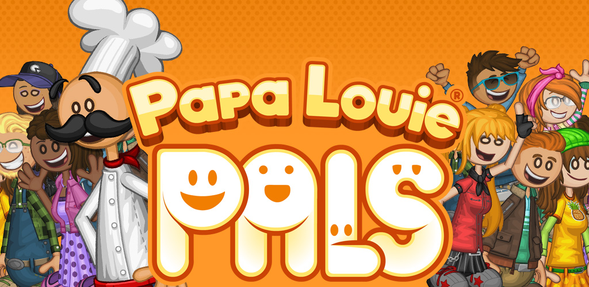

|
|
|
Quienes son los creadores de la franquicia de Papas Louie Pizzeria?
Flipline Studios es una empresa estadounidense de desarrollo de juegos Flash
fundada en 2004, mejor conocida por su
serie de juegos de gestión del tiempo en restaurantes Papa Louie. Fue
fundada por Tony Solary y Matt Neff.


De que tratan los juegos?
Los juegos de la serie "Papa Louie" son simuladores de restaurantes donde los
jugadores gestionan diferentes
establecimientos de comida. Cocinan, preparan pedidos y atienden a los clientes
para satisfacer sus necesidades. Con
desafíos únicos en cada entrega y la posibilidad de mejorar el restaurante,
estos juegos ofrecen una experiencia
divertida y adictiva para los jugadores.

Competencia Papa's Next Chefs
Papa's Next Chefs es un emocionante torneo anual donde los fans eligen qué
personajes trabajarán en el próximo
restaurante de Papa Louie. Divididos en cuatro categorías, los fans votan por
sus favoritos, creando anticipación y
emoción sobre los nuevos personajes que se unirán al juego. Esta competencia
única permite a los jugadores influir
directamente en el desarrollo de la serie Papa Louie.

Kingsley's Customerpalooza: Torneo de Flipline Studios
Kingsley's Customerpalooza es un torneo organizado por Flipline Studios, donde
los fanáticos pueden crear y votar por
clientes para aparecer en futuros juegos. El torneo consta de tres fases:
registro, votación y fase final. Los
finalistas son elegidos por votación de los fanáticos, lo que promueve la
participación de la comunidad y la creatividad
de los jugadores.

|
|
|
|
|
Papas Louie Pals
Papas Louie Pals es una aplicación lanzada el 26 de marzo de 2018, anunciada el 4 de
diciembre de 2017. Aunque no es un
juego, está diseñada para fomentar la creatividad de los fans de la serie. Permite a los
usuarios crear personajes
únicos con una amplia gama de opciones de personalización, desde aspecto físico hasta
vestimenta. Además, los usuarios
pueden construir escenas personalizadas con sus personajes, utilizando fondos,
accesorios y burbujas de palabras para
contar historias. La aplicación también ofrece la posibilidad de incluir personajes
famosos de la serie, como Papa
Louie, en las escenas creadas. Los usuarios pueden guardar y compartir sus creaciones,
brindando posibilidades infinitas
para la expresión creativa.

Juego de Sarge sin finalizar o demo
La demostración del juego Unfinished Sarge es una versión jugable lanzada como parte de
la celebración del OnionFest el
15 de mayo de 2019. Esta demostración ofrecía un vistazo a lo que habría sido la secuela
planeada de Papa Louie: When
Pizzas Attack!, con Sarge como protagonista. Aunque no es un juego completo, muestra
cómo habría sido el juego si se
hubiera desarrollado por completo, presentando una historia centrada en Sarge y su tarea
de reclutar cebollas para
reconstruir el Ejército de Cebolla. A pesar de que el juego nunca se completó, brinda
una visión emocionante de las
ideas que se tenían para la continuación de la serie.

|
|
|